Team. Both members are computer scientists. One owns acquisition, parsing and provenance; the other owns statistical framing, representation, ethics and policy interpretation. Research question. Beneath the single national weekly SPI figure, do persistent city-level food price differences exist, are the cities paying most the ones least able to absorb it, and is the published city detail enough to detect localised price stress? SDGs: primary SDG 2 (Target 2.1, access to food; Target 2.c, functioning food markets and market information); secondary SDG 10 (reduced inequalities).
Changes since Milestone 01. The 7-city panel reported in Milestone 01 was a parsing error: Appendix-A stacks three tables in one sheet, and the old script read only the first. The panel covers all 17 SPI cities (8 Punjab, 4 Sindh, 2 KP, 2 Balochistan, plus Islamabad). A correction note is in the repository. Following the instructor's feedback, three external sources are now merged.
Table 1. Master dataset: 23,409 rows × 46 columns. Observational unit: 1 row = 1 item's retail price in 1 city in 1 week (17 cities × 51 items × 27 weeks; 32 of the 51 items are food).
| Source | Role | Coverage | Access |
|---|---|---|---|
| PBS weekly SPI Annexure, Appendix-A | City-item prices (MIN/AVG/MAX): the panel | 27 weeks, 2025-05-15 to 2026-09-24 | xlsx from pbs.gov.pk release pages |
| PSLM District Level Survey 2019-20 | District deprivation: FIES food insecurity, literacy, schooling, water | 2019-20 | PDF report tables (text extraction) |
| Digital Census 2023, Table 1 | Total and urban population | 2023 | xlsx, one file per province |
| CPI (Urban), food and non-alcoholic beverages | Deflator only, not a regressor | monthly, 2025-05 to 2026-09 | PDF and Monthly Review docx |
Each PBS weekly release page (/weekly-sensitive-price-indicator-spi-for-the-week-ended-on-DD-MM-YYYY/) links an Annexure workbook.
A rate-limited script tried the Thursday, Wednesday and Friday page for each of 73 weeks from
2025-05-15 and logged every request, URL and SHA-256 hash. It found release pages for 12 weeks, most of them weeks already retrieved for Milestone 01 (the
re-downloads were byte-identical). After dropping 12 duplicate files, the panel holds 27 weeks. Other weeks may exist under URLs we did not try, so we do not treat the archive as complete. The week after our freeze date
(2026-10-01) was stored, unopened, as a holdout. External files were downloaded from pbs.gov.pk and are kept unchanged with
their URLs and hashes.
Validation. The parser asserts, for every week: 3 blocks, 17 cities, 51 items, 867 rows; no duplicate key; MIN ≤ AVG ≤ MAX; and zeros only as all-zero triples. Against PBS's own national columns, the cross-city minimum and maximum match PBS's national MIN and MAX in 1,377 of 1,377 item-weeks. The geometric mean of the city averages matches PBS's national average within 0.1% in 1,377 of 1,377. The arithmetic mean misses by a median of 0.42%. We therefore use the geometric mean as the reference price.
The raw sheet (179 rows × 25 columns) is not tidy. City names are column headers, each spanning MIN/AVG/MAX
cells, and three tables are stacked in one sheet. We melt each block into one row per city × item, concatenate the blocks and weeks,
and move PBS's national columns into a separate validation table. We then join the item classification (on item_id), the
city attributes (on city) and the CPI (on the month of week_end). Every join is many-to-one, and the row count is
asserted unchanged (Table 2).
Key alignment decisions.
Table 2. Reshaping and merge steps with keys, cardinality and the asserted row count.
| operation | source | key | cardinality | rows_after |
|---|---|---|---|---|
| stack | 3 Appendix-A blocks per workbook | same 51 item rows | rows: 7+7+3 cities x 51 = 867 per week | 867 |
| stack | 27 weekly workbooks | week_end | 867 x 27 | 23409 |
| merge | item_mapping.csv | item_id | many-to-one (51 items) | 23409 |
| merge | city table (Census 2023 + PSLM 2019-20) | city | many-to-one (17 cities) | 23409 |
| merge | urban food CPI | calendar month of week_end | many-to-one (months) | 23409 |
Nothing is deleted. Zero MIN/AVG/MAX triples (83 rows, 0.35%) are set to missing and flagged: rice IRRI-6/9 is never quoted in Gujranwala, Lahore or Sialkot, and Khuzdar has no gas quote in two weeks. PBS itself excludes these cities from its national mean. Missing counts and percentages for every column are in Appendix Table A1 of the Milestone 02 report. Most of the missingness is structural: weekly change columns are undefined across non-consecutive weeks (44.3% of rows), because only 15 pairs of weeks are 6-8 days apart. Table 3 gives the choice made for each kind of missingness. Selection bias: we exclude structural non-quotes from price comparisons, so results describe quoting markets and may still reflect selection bias, because a missing quote does not prove an item is unavailable in that city. The gaps in weekly coverage also mean the volatility analysis sees only the weeks we could retrieve.
Table 3. Kinds of missingness, the choice made for each, and why.
| kind | rows | choice | reason |
|---|---|---|---|
| Structural non-quote (PBS printed 0/0/0) | 83 | set to missing, flag, do not impute | Imputing invents a market price PBS does not record; PBS itself excludes these cities from its national mean |
| Weekly change across a non-consecutive gap | 10,367 | leave missing | Interpolation would manufacture week-to-week changes nobody observed |
| Weeks not retrieved from the PBS site | – | treat as a coverage gap | No source to impute from; stated as a limitation, not filled |
Log transformation. Prices are compared in logs because premiums are multiplicative: a 10% premium means the same thing for salt and for a
20 kg flour bag. Within an item, the median skewness of prices falls from 0.22 (raw) to
0.02 (log). Prices pooled across items in PKR are not a meaningful distribution (skewness
2.13), because they mix units. The main variable is
rel_price = log(city price / national geometric mean), which sums to zero across cities in each item-week. District urban population
is strongly right-skewed (skewness 2.30, driven by Karachi). Its log (log_pop_urban) has skewness
-0.72. Scaling. The four deprivation indicators are min-max scaled to 0-1 (higher = more deprived) and averaged
into deprivation_composite. Prices are z-scored within each item and week (price_z_item_week). All constants come from
the training weeks only. Encoding. Nominal strings become 0/1 dummy flags with fixed reference levels: Punjab for province, storable
staple for item category (Table 4). The model-ready file data/processed/m02/model_ready_food.parquet (14,607 food rows ×
44 columns) carries 7 dummy columns. Cities will enter H1 with sum-to-zero coding, so each coefficient is a
premium relative to the average city.
Table 4. Dummy encoding example: province and item_category strings (left) become 0/1 flags (right). Reference levels: Punjab and storable_staple (all zeros).
| city | province | item_category | prov_ICT | prov_Sindh | prov_KP | prov_Balochistan | cat_perishable | cat_branded_packaged | cat_prepared_food |
|---|---|---|---|---|---|---|---|---|---|
| Islamabad | ICT | perishable | 1 | 0 | 0 | 0 | 1 | 0 | 0 |
| Lahore | Punjab | perishable | 0 | 0 | 0 | 0 | 1 | 0 | 0 |
| Karachi | Sindh | perishable | 0 | 1 | 0 | 0 | 1 | 0 | 0 |
| Peshawar | KP | perishable | 0 | 0 | 1 | 0 | 1 | 0 | 0 |
| Quetta | Balochistan | perishable | 0 | 0 | 0 | 1 | 1 | 0 | 0 |
| Islamabad | ICT | branded_packaged | 1 | 0 | 0 | 0 | 0 | 1 | 0 |
| Islamabad | ICT | prepared_food | 1 | 0 | 0 | 0 | 0 | 0 | 1 |
Table 5 reports each variable at its own unit of analysis. City attributes take 17 values, so city-level relationships are always analysed with n = 17, never with the 23,409 rows. Skewed distributions show up where the resistant and non-resistant measures disagree. The within-city price range has mean 6.8% but median 1.4% (skewness 3.55). District urban population has mean 3.52 million but median 1.62 million. For city premiums, Larkana's mean (-4.9%) and median (-0.2%) differ by 4.8 points, because a few items drive the mean. We report medians alongside means wherever the two disagree. Weekly price changes are dominated by zeros: 75% of consecutive-week food changes are exactly 0, so their median and IQR are both 0.
Table 5. Summary statistics for key numerical variables: central tendency (mean, median), spread (SD, IQR) and skewness.
| variable (unit of analysis; unit) | n | mean | median | sd | iqr | skew | min | max |
|---|---|---|---|---|---|---|---|---|
| price_z_item_week (food; z-score, unitless) | 14539 | -0.000 | -0.043 | 0.970 | 1.227 | 0.189 | -3.865 | 3.795 |
| rel_price (food; log points) | 14607 | -0.000 | 0.000 | 0.130 | 0.110 | -0.144 | -1.239 | 0.708 |
| dlog_price (food; log points, consecutive weeks) | 8115 | -0.003 | 0.000 | 0.072 | 0.000 | -1.300 | -0.981 | 0.709 |
| within_city_range_pct (food; %) | 14607 | 6.812 | 1.395 | 11.665 | 9.384 | 3.549 | 0.000 | 152.858 |
| single_quote (food; 1 if MIN = MAX, else 0) | 14607 | 0.486 | 0.000 | 0.500 | 1.000 | 0.056 | 0.000 | 1.000 |
| fies_mod_sev_pct (17 cities; %) | 17 | 15.314 | 16.380 | 5.926 | 8.310 | 0.647 | 7.930 | 29.260 |
| illiteracy10_pct (17 cities; %) | 17 | 35.756 | 34.000 | 15.262 | 20.155 | 1.080 | 15.000 | 78.000 |
| out_of_school_pct (17 cities; %) | 17 | 28.573 | 25.739 | 15.495 | 19.000 | 0.627 | 10.000 | 60.000 |
| no_tap_water_pct (17 cities; %) | 17 | 76.782 | 81.740 | 20.667 | 18.130 | -1.121 | 31.680 | 100.000 |
| deprivation_composite (17 cities; 0-1) | 17 | 0.427 | 0.349 | 0.217 | 0.261 | 0.840 | 0.138 | 0.974 |
| pop_urban (17 city districts; millions) | 17 | 3.524 | 1.619 | 4.940 | 2.485 | 2.298 | 0.048 | 18.868 |
| log_pop_urban (17 city districts; log persons) | 17 | 14.368 | 14.298 | 1.341 | 1.176 | -0.725 | 10.787 | 16.753 |
For each city we average rel_price over weeks for each food item. The item-level means are the observations, so n is 31-32 items,
not thousands of rows. Islamabad's mean premium is +14.1% (95% t-interval [8.9, 19.6]), followed by Rawalpindi +10.2%
and Karachi +5.2%. Sukkur (-7.1%) and Bannu (-7.4%) are lowest (Fig. 1). 8 of 17 cities differ from
zero at α = 0.05. After a Bonferroni correction for 17 tests, 4 remain: Islamabad, Rawalpindi, Sukkur, Bannu. Premiums persist: of
3,269 consecutive-week pairs in which a city was above the cross-city median, 92.7% stayed above it the next
week. Restricting to pairs where the price actually changed, the figure is 84.1%.
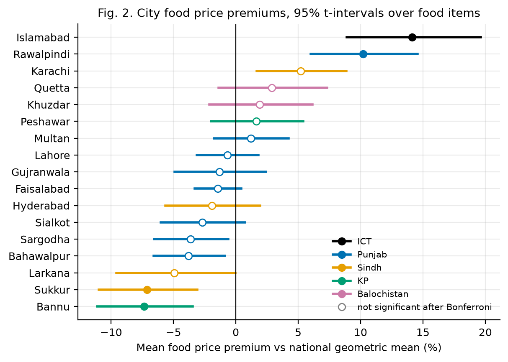
The coefficient of variation (CV) puts items priced in different units on one scale. Mean cross-city CV is highest for perishables (0.157, 11 items) and prepared food (0.144), lower for storable staples (0.107, 10 items), and lowest for branded packaged goods (0.026), which carry printed or distributor prices (Fig. 2). A one-tailed Welch comparison of perishables against storables gives p = 0.037, and a rank-based check gives p = 0.057. With about ten items per group this is suggestive, not conclusive. Categories were assigned on storability and pricing mechanism before any dispersion was computed.
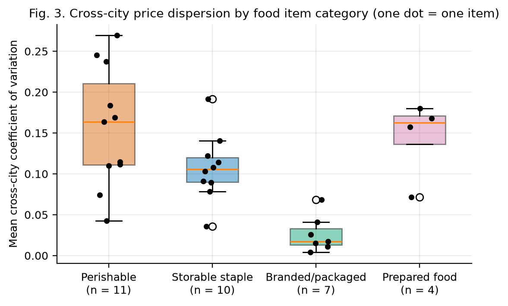
We apply both rules taught in the course to rel_price and to weekly log changes, each at two tiers (Table 6, Fig. 3).
Masking and variance inflation: the two rules disagree sharply. On rel_price, the IQR is narrow because many branded items are
priced identically everywhere, so the quartile fences sit close and flag 3,649 values. The SD, by contrast, is inflated
by the extreme values themselves, which pulls the 3-SD fence outward and masks them: only 434 are flagged. On weekly
changes the IQR is exactly 0, so the quartile rule flags every non-zero change and is unusable. We checked the eight most extreme relative prices
against the raw workbooks. 7 equal PBS's own national minimum or maximum for that item-week, and the other is a
genuine printed quote (Sukkur tomatoes, PKR 20 per 1 kg). They are therefore true
prices: we keep and flag them rather than trim them, because large moves are what H3 studies.
Table 6. Outliers by the quartile rule (beyond Q1 − k·IQR or Q3 + k·IQR) and the z-score rule (|z| > 2, 3). Units: log points.
| variable | n | Q1 | Q3 | IQR | mean | sd | > 1.5 IQR | > 3 IQR | |z| > 2 | |z| > 3 |
|---|---|---|---|---|---|---|---|---|---|---|
| rel_price, all 51 items | 23326 | -0.037 | 0.046 | 0.084 | 0.000 | 0.133 | 3649 | 1251 | 1598 | 434 |
| weekly log change, all items | 12959 | 0.000 | 0.000 | 0.000 | 0.001 | 0.062 | 2502 | 2502 | 493 | 296 |
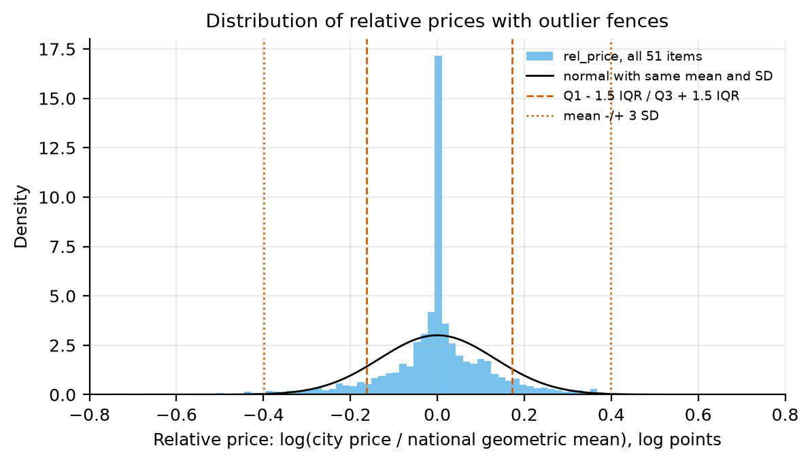
Following Anscombe's advice, we plot before computing any coefficient (Fig. 4). The relationship runs against the "poor pay more" expectation. The three least deprived cities (Karachi, Islamabad, Rawalpindi) have the highest premiums, while several of the most deprived (Bannu, Sukkur, Larkana) pay below the national reference. The Spearman correlation between premium and the deprivation composite is ρ = -0.56 (p = 0.020, n = 17). Dropping each city in turn keeps ρ between -0.72 and -0.48. Against FIES food insecurity alone, ρ = -0.32 (p = 0.209), which is not significant. The tap-water indicator is a weak deprivation measure: it rates Gujranwala and Sialkot (95% and 94% of households without tap water) as worse off than Quetta or Peshawar, and Karachi and Hyderabad as best off. This mostly reflects reliance on motor pumps and filtration plants in Punjab cities. Without it, the composite gives ρ = -0.50 (p = 0.041). Khuzdar and Quetta are the exception: their premiums are above zero, though not individually significant, and they have the highest food insecurity in the panel, so burden concentrates there. These are associations across 17 cities, with deprivation data from 2019-20, and support no causal claim.
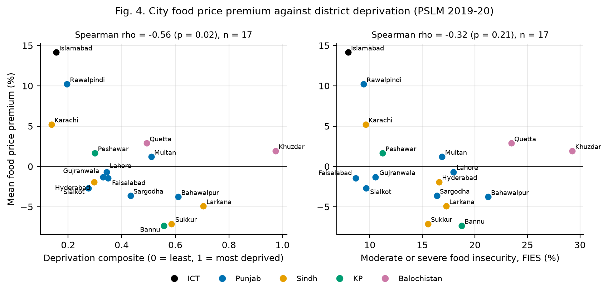
Table 7. Spearman correlation matrix of city-level variables (n = 17).
| Spearman ρ (n = 17) | premium | deprivation composite | FIES food insecurity | log urban population | share MIN = MAX |
|---|---|---|---|---|---|
| premium | 1.00 | -0.56 | -0.32 | 0.41 | -0.74 |
| deprivation composite | -0.56 | 1.00 | 0.76 | -0.56 | 0.49 |
| FIES food insecurity | -0.32 | 0.76 | 1.00 | -0.41 | 0.14 |
| log urban population | 0.41 | -0.56 | -0.41 | 1.00 | -0.41 |
| share MIN = MAX | -0.74 | 0.49 | 0.14 | -0.41 | 1.00 |
Table 8. Contingency table: SPI cities by province and premium tercile.
| province | low premium | mid premium | high premium |
|---|---|---|---|
| ICT | 0 | 0 | 1 |
| Punjab | 3 | 4 | 1 |
| Sindh | 2 | 1 | 1 |
| KP | 1 | 0 | 1 |
| Balochistan | 0 | 0 | 2 |
Data quality. Table 7 also shows that the premium correlates negatively with the share of a city's food records where MIN = MAX (ρ = -0.74). MIN = MAX means every quote PBS collected for that item in that city was identical: either a single quote or several equal ones. The published average then carries no information about price spread within the city. This share ranges from 20% in Karachi to 91% in Sukkur (Fig. 5), a measurement-quality disparity that H4 carries forward. Representation. The census districts that contain the 17 SPI cities hold 65% of the urban population of the four provinces and Islamabad. Because each city is smaller than its district, this is an upper bound on what the SPI markets represent. The panel includes no rural markets, AJK or Gilgit-Baltistan, and only two cities each for KP and Balochistan.
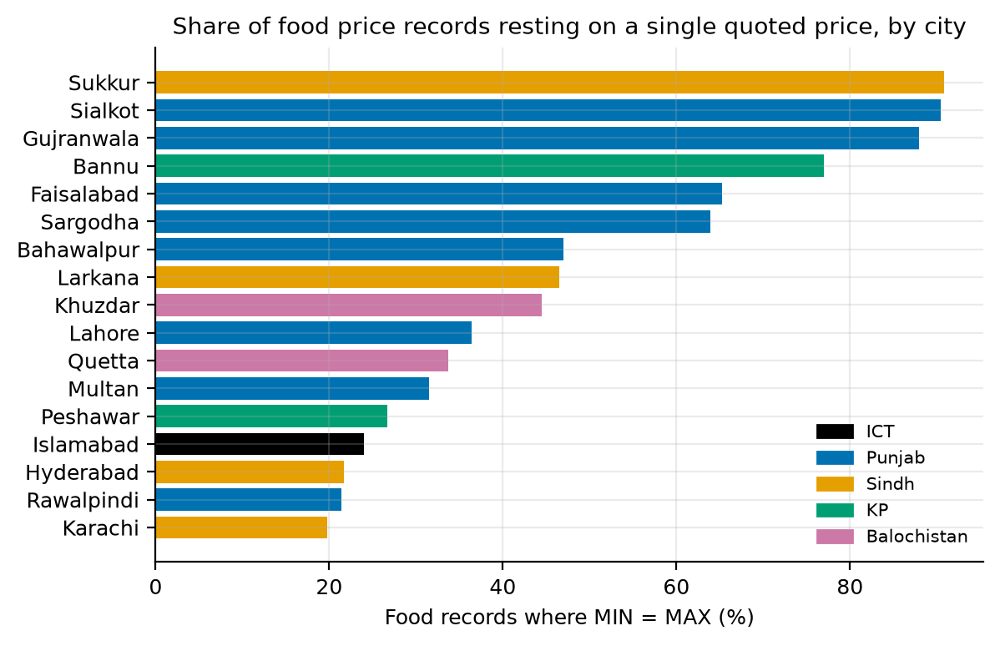
Each hypothesis is mapped to master-dataset columns in Table 9. Targets marked † are derived from existing columns, with the rule for each fixed in Milestone 02. Milestone 03 builds the final H3 label (Section 5) and tests H3 (Sections 6-8); the base rate and row count quoted for H3 below are the whole-period description from Milestone 02, which the models never use.
Table 9. Variable mapping: target, predictors and controls for each hypothesis, with column names from the master dataset or its views.
| Hypothesis | Target (Y) | Predictors (X) | Controls / confounders | Data | Effective n |
|---|---|---|---|---|---|
| H1a premiums | log_price | city (sum-to-zero dummies of city_code) | item × week fixed effects (item_id, week_end) | master, food rows | 17 cities; 32 items × 27 weeks |
| H1b persistence | above_median | above_median_prev | price_changed, item_category; rows with is_consecutive | master, food rows | 17 cities (one rate each) |
| H2 dispersion | cv, averaged per item | item_category (perishable vs storable_staple) | n_quoting | item_week_dispersion view | 11 vs 10 items |
| H3 abnormal move | abnormal_next_week † (final rule in §5) | |dlog_price|, |dlog_price_lag1| with observed flags, price_changed, rel_price, within_city_range_pct, single_quote, cat_* dummies | prov_* dummies, log_pop_urban, deprivation_composite | model_ready_food | 7,095 labelled rows |
| H4 representation | model error † (M03); single_quote (now) | province; terciles of pop_urban and deprivation_composite † | item_category | master / city table | 17 cities in 3-5 groups |
| H5 burden | city premium = city mean of rel_price † | deprivation_composite, fies_mod_sev_pct | log_pop_urban, city share of single_quote | city table (17 rows) | 17 |
Analytical plan: what Milestone 03 did. Milestone 03 is the classification milestone, so it tests H3.
Unit and target. One row is one city × food item × week t. The target y = 1 if the item's price in that city
moves abnormally between week t and the next consecutive release t+1. "Abnormal" means |Δlog price| above the item's own
90th percentile of non-zero weekly changes, because the plain 90th percentile is 0 for 13 of the 32 food items.
Items with fewer than five non-zero changes in the training rows get no threshold and are dropped
(5 items in the final split). The positive class is the abnormal move, the event a price monitor wants to catch.
Thresholds are fitted on training rows only, separately in every fold and in the final split. If they were fitted on all weeks, the
test weeks would help define what counts as abnormal.
Why only 15 of 27 weeks carry a label. A label needs the next week's price, and only 15 weeks are followed by a release 6-8 days later. This is a gap in PBS's published weekly archive, not in our method. Described with whole-period thresholds, the labelled data has 7,095 rows (473 per week), of which 205 are abnormal (2.9%). The models never see these whole-period thresholds.
Features. Every feature is known at week t (Table 10). A change that cannot be computed because the previous week was not published
(40% of rows for this week's change, 73% for last week's) is set to 0 and flagged
with a has_ indicator. The model can then tell "no change" from "not observed" (the Milestone 02 rule: flag, don't impute).
We deliberately do not add one dummy per item: with about 200 positives this would overfit, and it would swamp KNN's distances.
Table 10. Model features and why each might matter. Reference levels: storable staple (category) and Punjab (province).
| feature | why it might matter (all known at week t) |
|---|---|
| abs_dlog | size of this week's change: prices that just moved may keep moving or snap back |
| has_dlog | 1 if this week's change is observed (previous week published); flag instead of guessing |
| price_changed | 1 if the price changed at all this week; most weeks prices are flat |
| abs_dlog_lag1 | size of last week's change: a longer momentum window |
| has_lag1 | 1 if last week's change is observed |
| rel_price | log price relative to the national geometric mean: a city far from the others may correct |
| within_city_range_pct | (max - min) / avg across the city's outlets: disagreement may precede a move |
| single_quote | 1 if min = max (one effective quote): a data-quality flag (H4) |
| cat_perishable | perishable item (reference: storable staple); expected to be most volatile (H2) |
| cat_branded_packaged | branded / packaged item; printed prices change rarely |
| cat_prepared_food | prepared food item |
| prov_Sindh | province dummy (reference: Punjab) |
| prov_KP | province dummy (reference: Punjab) |
| prov_Balochistan | province dummy (reference: Punjab) |
| prov_ICT | Islamabad Capital Territory dummy (reference: Punjab) |
| log_pop_urban | log urban population of the city's district: market size |
| deprivation_composite | PSLM 2019-20 district deprivation (0-1): do poorer places see more shocks? |
Table 11 lists the five approaches. The two benchmarks set the floor. The majority class shows why accuracy is misleading here. The
category base-rate rule encodes the domain view that perishables move more, which Milestone 02 supported (H2). It is a tough baseline: it
needs no fitting beyond four rates, and any model that cannot beat it is not worth deploying. The three course models represent three different
ideas: a linear probability model, axis-aligned rules and similarity. Logistic regression and the tree use class_weight="balanced", which weights each
positive row by n/(2 × positives) and each negative by n/(2 × negatives), so the rare class counts as much as the common one. KNN has no class weights;
its min-max scaler, like the logistic model's z-score scaler, sits inside an sklearn Pipeline, so it is refitted on the training rows of each fold.
Table 11. Naive benchmarks and baseline models, with the reason each was chosen, its tuning grid and the setting selected in cross-validation.
| Model | How it works | Why it fits this problem | Grid (tuned in forward-chaining CV) | Chosen |
|---|---|---|---|---|
| Majority class (benchmark 1) | Always predicts 'normal' | Shows that accuracy misleads on rare events (Unit 10) | none | – |
| Category base-rate rule (benchmark 2) | Score = item category's abnormal rate in training weeks | One-line domain heuristic: 'perishables move more'. A model must beat it to be worth deploying | none | – |
| Logistic regression | Linear log-odds; z-scored inputs; balanced class weights | Probabilities for ROC and cost thresholds; stable with few positives; odds ratios an analyst can read | C ∈ {0.01, 0.1, 1, 10} | C=0.01 |
| Decision tree (CART) | Recursive if-then splits; balanced class weights | Rules a price committee can follow without software; captures interactions; no scaling | criterion ∈ {gini, entropy}; depth 2-6; min leaf ∈ {10, 30, 60} | criterion=gini, max_depth=2, min_samples_leaf=60 |
| KNN | Vote of the K nearest rows; min-max scaling fitted on training rows | A different idea: similar city-item situations behave alike; no training step | K ∈ {5, 15, 25, 51, 101, 201}; uniform/distance; Euclidean/Manhattan; all vs continuous features | n_neighbors=201, weights=distance, metric=manhattan, features=all |
We train on the first 11 labelled weeks (2025-07-17 to 2026-03-26) and test on the last 4 (2026-04-02, 2026-06-04, 2026-08-13, 2026-08-20): 73% / 27% by weeks. Purge rule: a row at week t is labelled from week t+1, so a training row whose t+1 is an evaluation week is dropped. Here the last training week (2026-03-26) is followed by the first test week, so its 541 candidate rows are purged, and the final models learn from 10 weeks. After purging and labelling, the training set has 4,560 rows (135 abnormal, 2.96%) and the test set has 1,824 rows (54 abnormal, 2.96%): 71% / 29% by rows. The two base rates are nearly equal, so the test weeks are not unusually calm or volatile. The fitted sample (6,384 rows) is smaller than the 7,095-row description in §5.1 for two reasons: the purged week is removed, and thresholds fitted on training rows alone leave 5 items without a label, against 4 under whole-period thresholds.
Why not a random stratified split? The brief's example is a random stratified split. Our rows are a panel: the same 17 × 28 city-item series recur every week, and neighbouring weeks share shocks. A random split would train on later weeks to predict earlier ones, which PBS could never do in practice. It also lets the model learn week-specific shocks that appear on both sides of the split. We keep time order. The purpose of stratification, keeping the rare class represented in every part, is met differently: every validation fold and the test set are checked to contain positives (16-28 per validation week; 54 in test), and logistic regression and the tree use balanced class weights. Class weights change what the model optimises; they are not a substitute for stratification, which is why the positive counts are checked. §6.4 compares random and time-ordered folds.
Outer boundary. Cross-validation may only use labels that end before the test period. The last training week (2026-03-26) is labelled from the first test week, so it is excluded from CV as well as from final training. This leaves 10 development weeks (to 2025-12-18). An earlier version of our code used that week as a CV validation week, which let test-period prices shape its labels; an independent review caught this, and every result here comes from the corrected design. The code now asserts that every CV label, in training and validation, ends before the first test week. Folds. Within the development weeks we use an expanding window (Fig. 6). Fold 1 trains on labelled weeks 1-5 and validates on week 6. Fold 2 trains on weeks 1-6 and validates on week 7, and so on, giving 5 folds. Each fold rebuilds its own label thresholds, scaler and model from its training weeks and applies the purge rule (4 folds lose their last training week to it). Each validation week holds only 16-28 abnormal moves, so fold-to-fold variance is large. We report the mean ± SD across folds and every fold's AUC (Appendix Table A1).
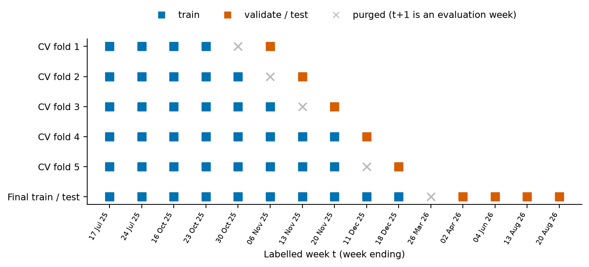
Each grid in Table 11 runs inside the five folds; no test-period information enters this step. Settings are compared by mean validation ROC-AUC, which does not depend on a threshold and is not fooled by the majority class. When several settings are within one fold-SD of the best, we take the simplest: smallest C, smallest depth with the largest leaves, or largest K. With so few positives per fold, the difference between near-equal settings is mostly noise (Fig. 7). Logistic regression: C hardly matters. C = 0.01, the strongest regularisation, has the best mean (0.641 ± 0.102). Decision tree: depth 4 had the best mean (0.673 ± 0.052), but depth 2 is within one SD, so we keep the simpler tree (0.641 ± 0.117); a depth-2 tree is also four readable rules. KNN: AUC rises steadily with K and peaks at the grid's edge (n_neighbors=201, weights=distance, metric=manhattan, features=all; 0.657 ± 0.128). Using the four continuous features alone is clearly worse (best 0.607), so the category dummies carry most of what KNN finds.
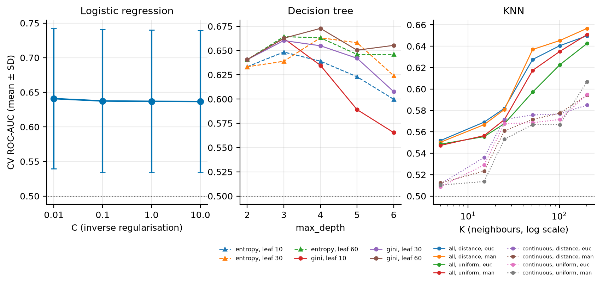
Random folds are over-optimistic. For the chosen logistic model, ordinary shuffled StratifiedKFold (5 folds) on the training rows gives
AUC 0.710 ± 0.038, against 0.641 for forward chaining: a gap
of 0.070. This is a comparison, not a controlled measurement of leakage: the two schemes also differ in training size, and the random folds
reuse labels fitted on all training rows. But it points the way we expected: ignoring time order makes the model look better than it is.
Shuffled-label sanity check. Refitting the final logistic model on permuted training labels and scoring the real test labels gives AUC
0.583 for the seed-42 shuffle. Over 200 shuffles the mean is 0.503
(5th-95th percentile 0.374-0.626), and 0 of 200 reached the real test AUC.
This is consistent with the pipeline behaving correctly, but it is a sanity check, not proof that nothing leaks (it could not have detected the
CV boundary problem above). It is also not a formal test of H3, because rows in the same week are not exchangeable and tuning is not repeated
under the null.
Asserts in the code: no week after the cutoff is read; no evaluation week is in any training set; every CV label ends before the test period;
thresholds come from training rows; the purge is applied; the mean shuffled AUC is within 0.03 of 0.5.
Table 12 reports the test set: one final evaluation of each model, with settings fixed in cross-validation. The diagnostics in §8 reuse these same test predictions; nothing on the test set was used to choose a model, setting or threshold. Table 13 reports the same metrics as mean ± SD across the five folds. Threshold-based metrics use 0.5. PR-AUC (computed as average precision, sklearn's step-wise estimate of the area under the PR curve) matters because, with about 3% positives, ROC-AUC can look respectable while precision stays tiny. A random model's PR-AUC equals the base rate (0.030 on test), so that is the bar to compare against.
Table 12. Test-set metrics (4 weeks, 1,824 rows, 54 abnormal). Threshold 0.5 for accuracy to F1. ROC-AUC with a percentile bootstrap 95% CI (2,000 resamples of test rows, seed 42).
| model | accuracy | precision | recall | specificity | F1 | ROC-AUC [95% CI] | PR-AUC | flagged at 0.5 |
|---|---|---|---|---|---|---|---|---|
| Majority class | 0.970 | 0.000 | 0.000 | 1.000 | 0.000 | 0.500 [0.500, 0.500] | 0.030 | 0 |
| Category base-rate rule | 0.970 | 0.000 | 0.000 | 1.000 | 0.000 | 0.708 [0.659, 0.753] | 0.051 | 0 |
| Logistic regression | 0.570 | 0.050 | 0.759 | 0.564 | 0.095 | 0.692 [0.636, 0.746] | 0.052 | 813 |
| Decision tree | 0.868 | 0.035 | 0.130 | 0.890 | 0.055 | 0.610 [0.576, 0.650] | 0.038 | 201 |
| KNN | 0.968 | 0.000 | 0.000 | 0.998 | 0.000 | 0.561 [0.487, 0.636] | 0.038 | 4 |
Table 13. Forward-chaining cross-validation metrics: mean ± SD over 5 validation weeks (threshold 0.5).
| model | accuracy | precision | recall | specificity | F1 | ROC-AUC | PR-AUC |
|---|---|---|---|---|---|---|---|
| Majority class | 0.946 ± 0.017 | 0.000 ± 0.000 | 0.000 ± 0.000 | 1.000 ± 0.000 | 0.000 ± 0.000 | 0.500 ± 0.000 | 0.054 ± 0.017 |
| Category base-rate rule | 0.946 ± 0.017 | 0.000 ± 0.000 | 0.000 ± 0.000 | 1.000 ± 0.000 | 0.000 ± 0.000 | 0.617 ± 0.107 | 0.079 ± 0.042 |
| Logistic regression | 0.622 ± 0.051 | 0.088 ± 0.044 | 0.628 ± 0.221 | 0.622 ± 0.061 | 0.152 ± 0.071 | 0.641 ± 0.102 | 0.093 ± 0.032 |
| Decision tree | 0.622 ± 0.253 | 0.066 ± 0.061 | 0.545 ± 0.384 | 0.628 ± 0.288 | 0.116 ± 0.100 | 0.641 ± 0.117 | 0.096 ± 0.058 |
| KNN | 0.944 ± 0.016 | 0.000 ± 0.000 | 0.000 ± 0.000 | 0.998 ± 0.001 | 0.000 ± 0.000 | 0.657 ± 0.128 | 0.107 ± 0.061 |
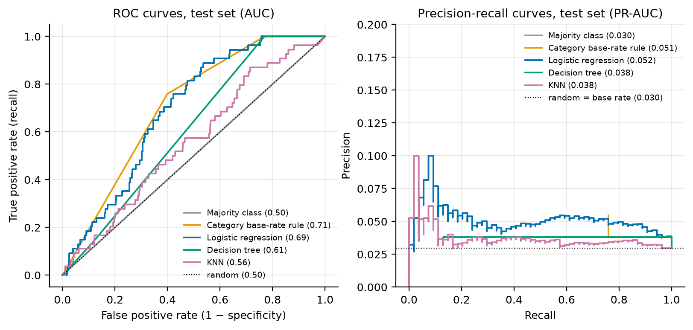
H3 decision. For logistic regression and the decision tree, the lower bound of the row-level bootstrap 95% CI for test ROC-AUC is above 0.5 (logistic 0.692 [0.636, 0.746]; tree 0.610 [0.576, 0.650]); for KNN it is not (0.561 [0.487, 0.636]). The bootstrap treats rows as independent, but rows in the same week share shocks, so these intervals are too narrow. As a check that respects weeks, we score each test week separately (Appendix Table A3): logistic regression is above 0.5 in all 4 weeks (range 0.542-0.748), the category rule in 3. We therefore reject H0 for logistic regression in these test weeks: information available at week t ranked next-week abnormal moves better than chance. With only four weeks this is evidence of a modest signal, not an established general result; the Week 14 holdout is the next test. Test PR-AUC is 0.052, under twice the base rate.
Does any ML model beat the simple rule? In cross-validation, logistic regression is ahead of the category rule on average (0.641 ± 0.102 vs 0.617 ± 0.107), but only in 3 of 5 folds. On the test weeks, the category rule is slightly ahead (0.708 vs 0.692). The paired bootstrap difference (logistic minus rule) is -0.015, 95% CI [-0.074, 0.041], so we cannot tell them apart. The depth-2 tree scores below the rule on test (row-bootstrap difference CI [-0.154, -0.036], with the same independence caveat). KNN had the highest CV mean but also the largest SD, and it fell to 0.561 on test. The honest reading is that most of the usable signal is "what kind of food is it". The ablation agrees. Logistic regression with only the three category dummies scores 0.617 in CV and 0.708 on test. The full feature set adds about 0.02 AUC in CV and nothing on test.
Accuracy misleads. The majority class is 97.0% accurate and catches nothing. The category rule never reaches a score of 0.5 and KNN does so for only 4 rows, so at that threshold they flag (almost) nothing, and their accuracy-to-F1 rows look like the majority class. Balanced class weights push logistic regression the other way: at 0.5 it flags 813 rows, with recall 76% but precision 5.0%. 0.5 is an arbitrary cut-off. §8 chooses thresholds from costs.
Why KNN struggles (Unit 11 limitations). With about 3% positives, most neighbourhoods of 5-25 rows contain no abnormal move at all, so the vote is 0 almost everywhere. Binary dummies count as much in the distance as real price changes, and irrelevant features add noise. Many rows are identical (no change, not observed), which produces ties. Only very large neighbourhoods give a usable score, and then KNN is a smoothed local base rate, which explains its peak at the edge of the K grid.
Label sensitivity. Under the Milestone 02 "contract" rule (plain 90th percentile; any change counts for 13 items) the test base rate is 7.2%. Logistic regression reaches 0.585 and the category rule 0.523, so the task is harder. The refined label is the one we defend.
The alert is meant for a PBS analyst, or a district Price Control Committee or price magistrate deciding where to send inspectors or which items to watch next week.
Cost matrix (Provost and Fawcett, Ch. 7). cost(TP) = cost(TN) = 0, cost(FP) = 1 unit and cost(FN) = r units. We put the cost in one cell only, to avoid the double counting Provost and Fawcett warn about. We do not also credit a "benefit" for true positives. Flagging a row with probability p of being abnormal is worth it when p·r > 1 − p, i.e. p > 1/(1 + r). For an average row, p is the training base rate (2.96%), so "flag everything" beats "flag nothing" exactly when r > (1 − p)/p = 32.8, close to the inverse base rate (33.8). r is a value judgment made by people, not something the data decides, so we vary it over {1, 5, 10, 20, 35}. For each r and model, the threshold that minimises total cost is chosen on the pooled out-of-fold CV predictions (all from development weeks) and then applied to the test predictions.
Table 14. Test cost per 1,000 city-item-weeks (in false-alarm units) and, in brackets, the share of abnormal moves caught, for each cost ratio r. Thresholds were chosen on CV predictions only.
| policy | r = 1 | r = 5 | r = 10 | r = 20 | r = 35 |
|---|---|---|---|---|---|
| Category base-rate rule | 30 (0%) | 148 (0%) | 296 (0%) | 592 (0%) | 637 (76%) |
| Logistic regression | 30 (0%) | 148 (0%) | 430 (46%) | 592 (83%) | 709 (94%) |
| Decision tree | 30 (0%) | 148 (0%) | 364 (13%) | 747 (100%) | 805 (100%) |
| KNN | 30 (0%) | 148 (0%) | 418 (20%) | 711 (48%) | 932 (69%) |
| Flag nothing (= majority class) | 30 (0%) | 148 (0%) | 296 (0%) | 592 (0%) | 1036 (0%) |
| Flag everything | 970 (100%) | 970 (100%) | 970 (100%) | 970 (100%) | 970 (100%) |
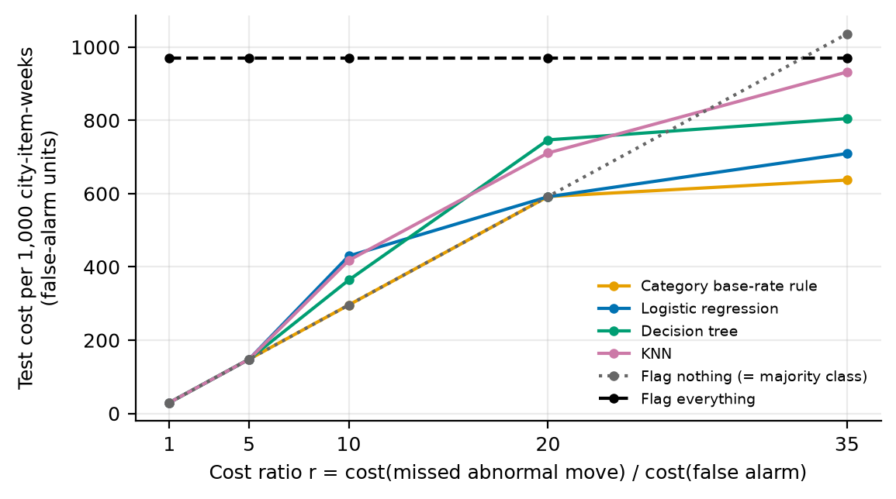
Reading the sensitivity (test weeks only). For r ≤ 10 the cheapest policy is to flag nothing. At r = 10 the three ML models' CV thresholds raise some alerts, and on test each costs more than staying silent. At r = 20, logistic regression (591.6) and flagging nothing (592.1) are essentially tied. At r = 35 the category rule is cheapest (637), ahead of logistic regression (709), flagging everything (970) and flagging nothing (1,036). So, in these test weeks, no ML model beats the simple rule on cost, and alerting only pays off at all when a missed shock is judged to be worth roughly 20 or more unnecessary inspections. These are the points we chose to try, not a measured break-even, and the recommended threshold depends on r. We use r = 20 below as an illustrative reference (a value judgment, not chosen from the data). At that threshold logistic regression flags 52% of test rows, catches 83% of abnormal moves, and has precision 4.8% (Appendix Table A2 has all models).
Alert budget. A decision-maker may think in terms of capacity rather than r: "we can check N city-items a week". Table 15 ranks each test week's 456 rows by score and takes the top N. With 50 checks a week, logistic regression puts 11 of the 54 abnormal moves in front of an inspector (20%); the category rule, with random tie-breaking, puts 11.0 in front of them. Precision@N stays between 4% and 7%, against 3.0% for random checks.
Table 15. Alert budget, pooled over the four test weeks: share of abnormal moves caught (recall) and share of checks that find one (precision) when only the top N rows per week are checked. Ties (category rule) are counted at their expected value. Per-week results are in Appendix Table A4.
| model | top 10/week: recall | top 10/week: precision | top 25/week: recall | top 25/week: precision | top 50/week: recall | top 50/week: precision |
|---|---|---|---|---|---|---|
| Category base-rate rule | 0.041 | 0.055 | 0.102 | 0.055 | 0.203 | 0.055 |
| Decision tree | 0.026 | 0.035 | 0.065 | 0.035 | 0.130 | 0.035 |
| KNN | 0.037 | 0.050 | 0.111 | 0.060 | 0.148 | 0.040 |
| Logistic regression | 0.037 | 0.050 | 0.130 | 0.070 | 0.204 | 0.055 |
Equity weighting (preview of the Milestone 04 fairness audit). If a missed shock counts 1, 1.5 or 2 times as much in low-, mid- and high-deprivation cities, the cost-minimising choices shift towards flagging. At r = 10 the logistic threshold falls to 0.47 and recall rises to 83%, although on test flagging nothing is still cheapest. At r = 35 logistic regression becomes the cheapest policy. Weighting by need changes who gets protected, and that is a decision for policy-makers, not for us.
Fig. 10 uses the Unit 10 layout: actual class in rows, predicted in columns, positive (abnormal) class first, with counts and row percentages. So the top-left cell over its row is recall, and the bottom-right over its row is specificity. The majority class and the category rule (at r = 20) have an empty first column. Logistic regression at 0.5 catches 41 of 54 abnormal moves at the price of 772 false alarms. The r = 20 threshold trades a little more recall for more false alarms. The depth-2 tree at its r = 20 threshold flags every non-branded item, which is the category rule in disguise.
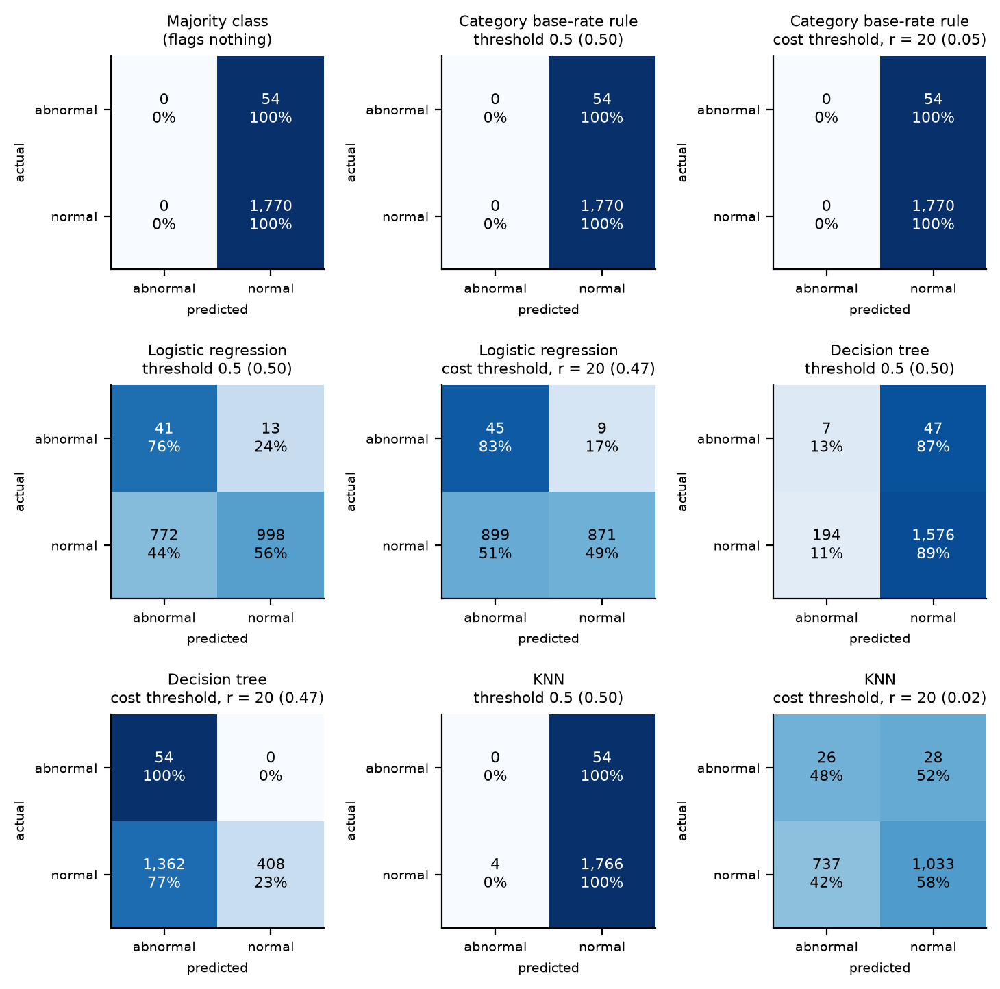
Table 16 breaks down the logistic model's errors at the r = 20 threshold. This is descriptive only; the formal test is H4 in Milestone 04, and many cells hold under 20 positives. Two patterns stand out.
Table 16. Logistic regression errors on the test set at the r = 20 threshold, by group. FN rate = share of abnormal moves missed; FP rate = share of normal rows flagged. Terciles are over the 17 cities.
| grouping | group | rows | positives | base rate | flagged | FN rate | FP rate |
|---|---|---|---|---|---|---|---|
| item category | branded_packaged | 408 | 0 | 0.000 | 0 | – | 0.000 |
| item category | perishable | 748 | 41 | 0.055 | 632 | 0.122 | 0.843 |
| item category | storable_staple | 668 | 13 | 0.019 | 312 | 0.308 | 0.463 |
| city-size tercile | large | 640 | 18 | 0.028 | 278 | 0.056 | 0.420 |
| city-size tercile | medium | 540 | 20 | 0.037 | 284 | 0.300 | 0.519 |
| city-size tercile | small | 644 | 16 | 0.025 | 382 | 0.125 | 0.586 |
| deprivation tercile | high | 648 | 20 | 0.031 | 449 | 0.100 | 0.686 |
| deprivation tercile | low | 644 | 16 | 0.025 | 248 | 0.312 | 0.377 |
| deprivation tercile | mid | 532 | 18 | 0.034 | 247 | 0.111 | 0.449 |
| test week | 2026-04-02 | 456 | 18 | 0.039 | 207 | 0.167 | 0.438 |
| test week | 2026-06-04 | 456 | 18 | 0.039 | 266 | 0.111 | 0.571 |
| test week | 2026-08-13 | 456 | 9 | 0.020 | 262 | 0.111 | 0.568 |
| test week | 2026-08-20 | 456 | 9 | 0.020 | 209 | 0.333 | 0.454 |
Edge cases (Table 17; the full ten of each are in the notebook).
price_changed = 0). Moves that come with no
visible recent history are invisible to any model built on recent changes.Table 17. The five most confident false negatives (lowest score among missed abnormal moves) and false positives (highest score among normal rows), logistic regression, r = 20 threshold. Changes are in log points.
| error | city | item | week | score | next-week change | threshold | |change| at t | changed at t | MIN = MAX |
|---|---|---|---|---|---|---|---|---|---|
| FN | Quetta | Rice basmati broken | 2026-08-20 | 0.272 | -0.072 | 0.045 | 0.000 | 0 | 0 |
| FN | Quetta | Rice IRRI-6/9 | 2026-08-20 | 0.278 | -0.061 | 0.058 | 0.000 | 0 | 0 |
| FN | Multan | Garlic | 2026-04-02 | 0.328 | -0.219 | 0.149 | 0.000 | 0 | 0 |
| FN | Islamabad | Eggs (farm) | 2026-06-04 | 0.377 | -0.148 | 0.057 | 0.000 | 0 | 0 |
| FN | Islamabad | Eggs (farm) | 2026-08-13 | 0.378 | -0.096 | 0.057 | 0.000 | 0 | 0 |
| FP | Larkana | Onions | 2026-08-20 | 0.854 | -0.161 | 0.416 | 0.379 | 1 | 1 |
| FP | Sukkur | Tomatoes | 2026-04-02 | 0.844 | 0.000 | 0.624 | 0.061 | 1 | 1 |
| FP | Sukkur | Potatoes | 2026-04-02 | 0.843 | 0.000 | 0.187 | 0.182 | 1 | 1 |
| FP | Sukkur | Tomatoes | 2026-08-20 | 0.841 | -0.288 | 0.624 | 0.223 | 1 | 1 |
| FP | Bannu | Eggs (farm) | 2026-08-20 | 0.837 | 0.000 | 0.057 | 0.077 | 1 | 1 |
Logistic regression. Inputs are z-scored inside the pipeline, so each coefficient is the change in log-odds per one standard deviation, and ecoef is the odds ratio (OR) per SD (Table 18, Fig. 11). For a 0/1 feature, one SD is a fixed fraction of the switch from 0 to 1, so these ORs rank features rather than describe a full category change. They are associations, not causes. The top five:
cat_branded_packaged (OR 0.60): one SD more of being a branded/packaged item is associated with 40% lower odds of an abnormal move next week.price_changed (OR 1.47): one SD more of a price change this week is associated with about 1.47 times the odds of an abnormal move next week.cat_perishable (OR 1.33): one SD more of being a perishable is associated with about 1.33 times the odds of an abnormal move next week.has_dlog (OR 0.79): one SD more of having an observed change this week (previous week published) is associated with 21% lower odds of an abnormal move next week.prov_ICT (OR 0.80): one SD more of being in Islamabad is associated with 20% lower odds of an abnormal move next week.abs_dlog gets a small coefficient because it is correlated with price_changed (r = 0.50
in the training rows), and the two share the credit (Unit 09). The has_ flags are negative mostly because they mark which weeks had a
published previous week, so they partly stand in for time period, not for a market effect.
Decision tree. The depth-2 tree splits first on branded/packaged, then on this week's change for other items, and on relative price for branded
ones; the diagram is in the notebook (Part D.2) and reports/m03/figures/fig21_tree.png. Its impurity importance is 0.58 for cat_branded_packaged,
0.29 for abs_dlog and 0.12 for rel_price. Its leaves read as rules (Table 19).
The top rule is: IF the item is not branded/packaged AND its price moved by more than about 1% this week, THEN the training abnormal rate is
6.9%, against 3.0% overall. Branded items whose price is at or above the national reference
had no abnormal move in training.
Worked Gini (root). Unweighted, the root holds 135 positives in 4,560 rows (Gini 0.0575); the split sends
130/3,540 left and 5/1,020 right, gain 0.0004. With balanced weights (positive
16.9, negative 0.515), the root is exactly 50/50 (Gini 0.50), the children have Gini 0.494
and 0.239, and the weighted gain is 0.040, the largest available.
Cross-model check. Both models put the branded/packaged flag first, and both give recent price movement a top role (price_changed in
the logistic model, abs_dlog in the tree: two views of the same signal). These are the trustworthy drivers. Perishability, smaller markets and
higher district deprivation are positive in the logistic model only. A depth-2 tree can use just three features, so its silence on them is not evidence
against them.
Table 18. Top 10 features by |logistic coefficient| and their tree importance (blank = unused by the tree).
| feature | coef per SD | odds ratio per SD | rank (logistic) | tree importance | rank (tree) |
|---|---|---|---|---|---|
| cat_branded_packaged | -0.513 | 0.599 | 1 | 0.584 | 1.000 |
| price_changed | 0.384 | 1.467 | 2 | 0.000 | – |
| cat_perishable | 0.284 | 1.328 | 3 | 0.000 | – |
| has_dlog | -0.234 | 0.791 | 4 | 0.000 | – |
| prov_ICT | -0.221 | 0.802 | 5 | 0.000 | – |
| has_lag1 | -0.186 | 0.831 | 6 | 0.000 | – |
| log_pop_urban | -0.181 | 0.834 | 7 | 0.000 | – |
| deprivation_composite | 0.138 | 1.148 | 8 | 0.000 | – |
| prov_Balochistan | -0.120 | 0.887 | 9 | 0.000 | – |
| within_city_range_pct | -0.106 | 0.900 | 10 | 0.000 | – |
Table 19. Decision-tree leaves as IF-THEN rules, with their actual abnormal rate on the training rows.
| rule | training rows | abnormal | abnormal rate |
|---|---|---|---|
| IF cat_branded_packaged <= 0.5 AND abs_dlog > 0.0101 | 798 | 55 | 0.069 |
| IF cat_branded_packaged <= 0.5 AND abs_dlog <= 0.0101 | 2742 | 75 | 0.027 |
| IF cat_branded_packaged > 0.5 AND rel_price <= -0.00741 | 287 | 5 | 0.017 |
| IF cat_branded_packaged > 0.5 AND rel_price > -0.00741 | 733 | 0 | 0.000 |
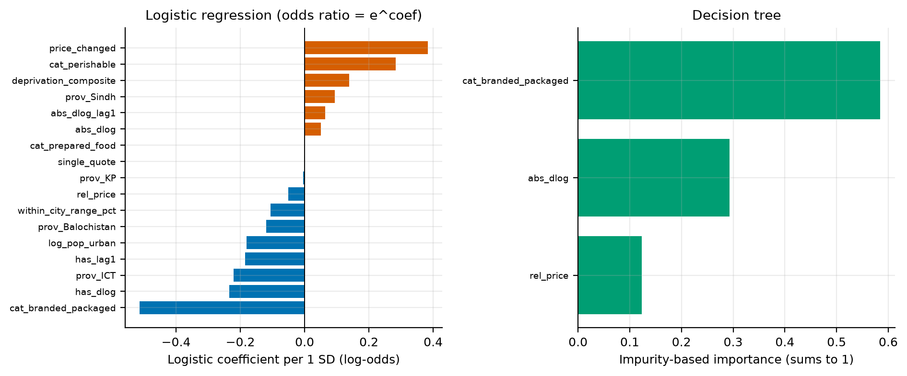
Initial policy takeaways (SDG 2.c). These are hedged: they rest on four test weeks and modest signal.
Limitations.
Milestone 04 plan.
Pakistan Bureau of Statistics. Weekly Sensitive Price Indicator, Annexure workbooks, weeks ended 2025-05-15 to
2026-09-24. https://www.pbs.gov.pk/
Pakistan Bureau of Statistics. Pakistan Social and Living Standards Measurement Survey 2019-20, District Level: Tables 2.14(a), 2.15, 7.1, 9.1.
Pakistan Bureau of Statistics. 7th Population and Housing Census 2023 (Digital Census): Table 1, district results.
Pakistan Bureau of Statistics. CPI (Urban) Group-wise Cumulative Indices, base 2015-16; Monthly Review on Price Indices, August and September 2026.
Provost, F. and Fawcett, T. (2013). Data Science for Business. O'Reilly. Ch. 7 (expected value, cost-benefit matrix) and Ch. 8 (ROC, profit curves).
Associated Press of Pakistan (2026, 19 March). Eid-ul-Fitr on Saturday as Shawwal moon not sighted. https://www.app.com.pk/national/eid-ul-fitr-on-saturday-as-shawwal-moon-not-sighted/
Radio Pakistan (2026, 17 May). Moon sighted, Eid-ul-Adha to be celebrated on 27 May. https://radio.gov.pk/17-05-2026/moon-sighted-eid-ul-adha-to-be-celebrated-on-27-may
Pedregosa, F. et al. (2011). Scikit-learn: Machine Learning in Python. Journal of Machine Learning Research, 12, 2825-2830.
Wickham, H. (2014). Tidy Data. Journal of Statistical Software, 59(10).
Anscombe, F. J. (1973). Graphs in Statistical Analysis. The American Statistician, 27(1), 17-21.
Table A1 (part 1). Forward-chaining folds: weeks, purged rows, and rows and positives after labelling. 'items w/o label' = items with fewer than five non-zero changes in that fold's training rows.
| fold | training weeks (t) | validation week | purged | train rows | train pos. | val. rows | val. pos. | items w/o label |
|---|---|---|---|---|---|---|---|---|
| 1 | 2025-07-17 to 2025-10-30 | 2025-11-06 | 541 | 1416 | 56 | 354 | 28 | 11 |
| 2 | 2025-07-17 to 2025-11-06 | 2025-11-13 | 541 | 1855 | 70 | 371 | 18 | 10 |
| 3 | 2025-07-17 to 2025-11-13 | 2025-11-20 | 541 | 2328 | 87 | 388 | 16 | 9 |
| 4 | 2025-07-17 to 2025-11-20 | 2025-12-11 | 0 | 3240 | 111 | 405 | 26 | 8 |
| 5 | 2025-07-17 to 2025-12-11 | 2025-12-18 | 541 | 3240 | 111 | 405 | 16 | 8 |
Table A1 (part 2). Validation ROC-AUC per fold for the chosen settings.
| model | fold 1 | fold 2 | fold 3 | fold 4 | fold 5 |
|---|---|---|---|---|---|
| Majority class | 0.500 | 0.500 | 0.500 | 0.500 | 0.500 |
| Category base-rate rule | 0.740 | 0.666 | 0.448 | 0.609 | 0.624 |
| Logistic regression | 0.724 | 0.758 | 0.510 | 0.583 | 0.630 |
| Decision tree | 0.765 | 0.742 | 0.485 | 0.568 | 0.643 |
| KNN | 0.730 | 0.807 | 0.466 | 0.624 | 0.657 |
Table A2. Test metrics at the cost-based threshold for r = 20 (chosen on pooled CV predictions, applied once to test).
| model | threshold (from CV) | accuracy | precision | recall | specificity | f1 | tp | fp | fn | tn |
|---|---|---|---|---|---|---|---|---|---|---|
| Category base-rate rule | 0.053 | 0.970 | 0.000 | 0.000 | 1.000 | 0.000 | 0 | 0 | 54 | 1770 |
| Logistic regression | 0.467 | 0.502 | 0.048 | 0.833 | 0.492 | 0.090 | 45 | 899 | 9 | 871 |
| Decision tree | 0.471 | 0.253 | 0.038 | 1.000 | 0.231 | 0.073 | 54 | 1362 | 0 | 408 |
| KNN | 0.022 | 0.581 | 0.034 | 0.481 | 0.584 | 0.064 | 26 | 737 | 28 | 1033 |
Table A3. Test ROC-AUC computed separately for each test week (the dependence check used in §7).
| week | rows | positives | category rule | logistic | tree | KNN |
|---|---|---|---|---|---|---|
| 2026-04-02 | 456 | 18 | 0.740 | 0.748 | 0.648 | 0.705 |
| 2026-06-04 | 456 | 18 | 0.785 | 0.736 | 0.616 | 0.559 |
| 2026-08-13 | 456 | 9 | 0.757 | 0.694 | 0.614 | 0.455 |
| 2026-08-20 | 456 | 9 | 0.449 | 0.542 | 0.512 | 0.406 |
Table A4. Alert budget per test week: abnormal moves caught (expected count under random tie-breaking) by the category rule and logistic regression. Abnormal moves per week: 2026-04-02 18, 2026-06-04 18, 2026-08-13 9, 2026-08-20 9.
| model | checks per week | 2026-04-02 | 2026-06-04 | 2026-08-13 | 2026-08-20 |
|---|---|---|---|---|---|
| Category base-rate rule | 10 | 0.8 | 0.9 | 0.4 | 0.1 |
| Category base-rate rule | 25 | 2.0 | 2.3 | 1.1 | 0.1 |
| Category base-rate rule | 50 | 4.0 | 4.5 | 2.1 | 0.3 |
| Logistic regression | 10 | 0.0 | 1.0 | 1.0 | 0.0 |
| Logistic regression | 25 | 4.0 | 2.0 | 1.0 | 0.0 |
| Logistic regression | 50 | 5.0 | 4.0 | 2.0 | 0.0 |